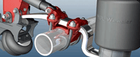
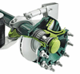
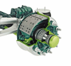
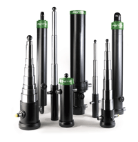

에어서스펜션  90여년의 역사를 자랑하는 네델란드의 VDL Weweler사의 최신 기술에의해 생산된 신뢰성 있는 제품을 공급하고 있습니다. VDL Weweler사의 에어서스펜션은 유럽시장에 30%이상의 시장점유율을 가지고 있으며 자동화된 최신 생산시설에서 생산되고 있으며 전세계 모든 대륙에 수출되어 사용되고 있습니다. |
액슬   유럽 최고의 기술로 설계제작된 고품질 액슬을 네델란드 VALX사로 부터 공급하고 있습니다. 드럼 브래이크관련 부품은 TMD Friction Group에서 제조된 Textar, 디스크 브레이크는 WABCO, 버아링 및 씰 관련 제품은 SKF, 메인베어링은 TIMKEN 등 각 부품의 세계적인 브랜드의 제품을 사용하여 제품의 신뢰도를 높였습니다. |
유압실린더  이탈리아의 HS Penta 는 Inter Pump Group에 속해있는 다단 유압실린더 설계 및 제조 회사로 유럽시장의 30%이상의 시장 점유율을 자랑하고 있으며 용접없이 내경 외경 전 부분을 직접 가공하여 생산하여 대부분의 제품을 200bar 압력에서 사용할 수 있도록 설계 및 제작된 고강성의 제품입니다. 완전 자동화된 공정에서 각 단을 가공하여 가볍고 우수한 품질의 제품을 확보하고 있습니다. |